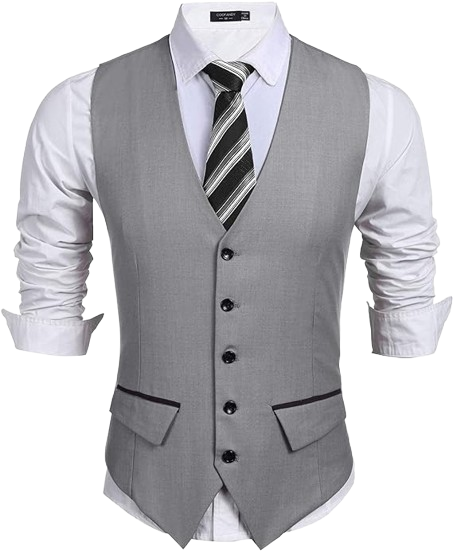

¿Qué son?
Los códigos de vestimenta son pautas establecidas que dictan el tipo de ropa que se espera que los invitados lleven en diferentes eventos sociales, ceremonias o reuniones. Estas directrices están destinadas a garantizar que los asistentes se vistan de manera apropiada y acorde con la ocasión, lo que ayuda a mantener una atmósfera cohesiva y adecuada. Aquí hay una descripción de algunos de los códigos de vestimenta más comunes y en qué fiestas suelen aplicarse:-
Ropa Casual
Este código de vestimenta es relajado y no requiere prendas formales. Los invitados pueden optar por atuendos cómodos y casuales, como jeans, camisetas, blusas informales y calzado cómodo. Las fiestas informales entre amigos, barbacoas o reuniones en el hogar suelen tener este código de vestimenta.
-
Ropa de negocios
Este código de vestimenta es más elegante que el casual, pero menos formal que el traje completo. Para los hombres, esto puede significar llevar traje sin corbata, mientras que para las mujeres puede implicar vestidos o conjuntos elegantes, pero no de gala. Se aplica en eventos de trabajo, cócteles de negocios o cenas semiformales.
-
De etiqueta

Este es uno de los códigos de vestimenta más elegantes y requiere que los invitados vistan con trajes de noche para mujeres (vestidos largos o de cóctel) y esmoquin o trajes de etiqueta para hombres, a menudo con corbatas de moño. Se utiliza en eventos como bodas formales, galas benéficas o cenas de gala.
-
Black tie

Similar al código de vestimenta formal, pero con la opción de usar esmoquin o un traje oscuro para hombres, y vestidos largos o de cóctel para mujeres. Es común en eventos nocturnos de gala, cenas de empresa o fiestas de fin de año.
-
Tematica
Algunas fiestas pueden requerir que los invitados se vistan de acuerdo con un tema específico, como los años 80, el estilo tropical, Hollywood, etc. La vestimenta depende del tema elegido por el anfitrión y se aplica en diversas reuniones informales o fiestas temáticas.